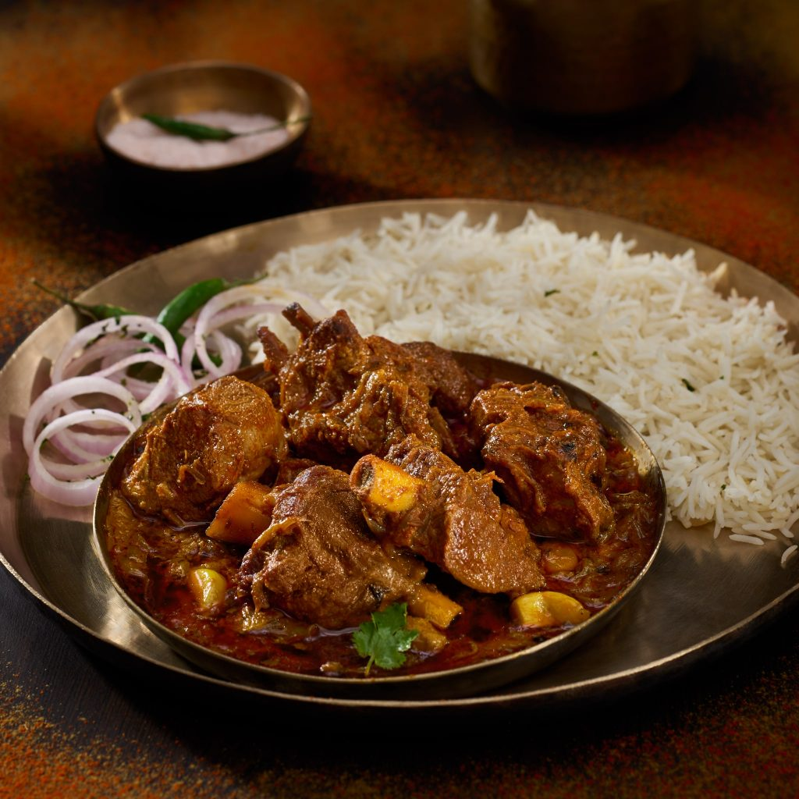

Champaran Mutton
As the name suggests, Champaran meat is a famous dish with its roots from Champaran, Bihar, India. Here, the meat is marinated in a mix of exotic species, oil, ghee, ginger paste, roasted onions and cooked in a buttery sauce, which brings rich flavours. Once all the spices are mixed, the mutton is cooked at a low flame of a wood fire and is tossed continuously to maintain the flavours. Even though no complex art or method is used for cooking Champaran Mutton, it continues to surprise with the burst of flavour in every bite.
Ingredients
-
mutton
-
onion
-
cooking oil
- mutton masala
Steps
-
Start by marinating the mutton with all the species in ¾ cup of mustard oil, excluding the onions. Keep it aside for at least 1 hour or overnight.Start by marinating the mutton with all the species in ¾ cup of mustard oil, excluding the onions. Keep it aside for at least 1 hour or overnight.
-
Add the remaining oil and put the onions in a big bottom saucepan or earthen pot. Toss it at a low flame until its colour changes to a golden brown. Add the mutton, place the lid on and start sealing the edges using the dough.
-
Cook the mutton at a low flame and increase the flame gradually from low to medium. Let the mutton cook for 40-45 minutes at least.
- After 45 minutes, take off the dough seal and check if the mutton is cooked properly. If the oil used is floating on the upper layer, it means the mutton is well-cooked and tender.
-
Before serving, garnish the mutton with coriander leaves. Your home-cooked Champaran Mutton is ready to serve.